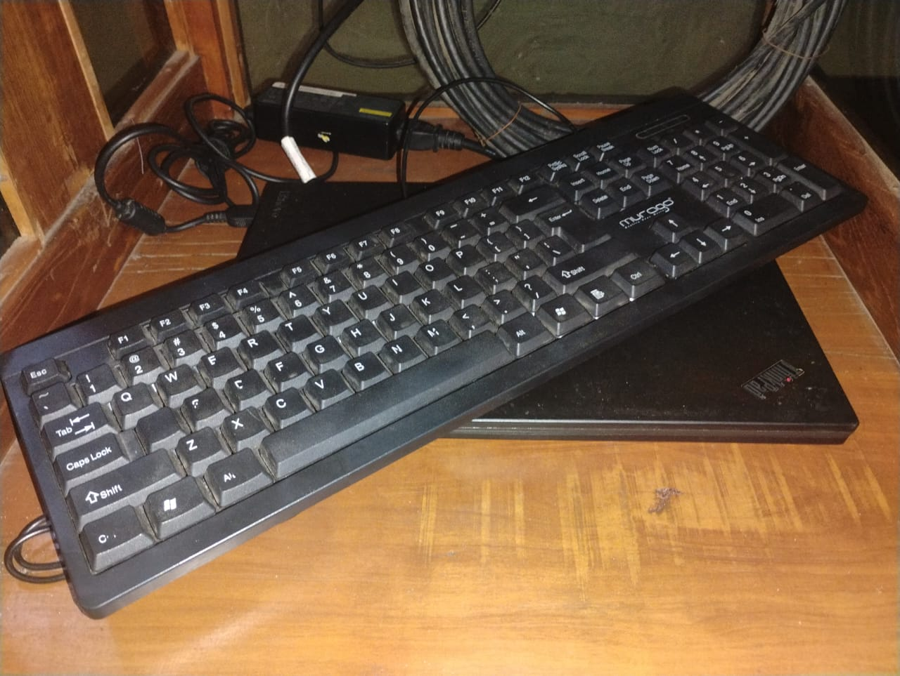
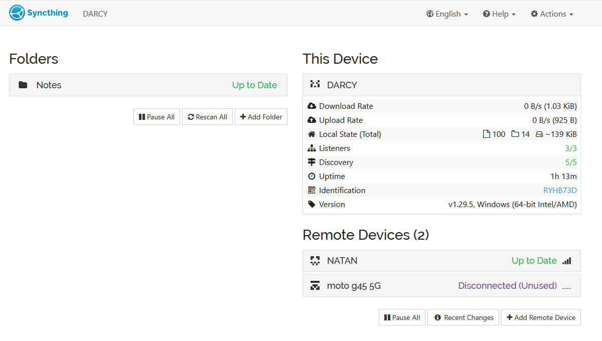

Home Lab
Background
I had a friend whom I lent my old laptop to. It was a Thinkpad X260 that I bought 4-5 years ago. He gave it back to me because of some issues: keyboard is typing on its own, and it is not responsive. In the first place, soon after I got the laptop first hand 4 years ago, I replaced the keyboard. Its layout was Japanese and I felt uneasy typing with Japanese keyboard. So, I put the old keyboard sparepart in a box, used the laptop for a while, even broke the backspace key, and lent it to my friend. As soon as he returned the laptop, I checked and confirmed the issue. I wanted to tinker in Linux and that kind of stuff so I thought that using that old laptop would be a good idea. I replaced the keyboard to the old Japanese keyboard, and unfortunately the issue remained. “It must be the connector”, I thought. Even though I had a full-size membrane keyboard laying around, I still didn’t think using a portable laptop with a full-size keyboard is a good idea, it would occupy much space.
Intermezzo
I stumbled upon NetworkChuck video, the hacker’s roadmap 2025. Well as you may notice, I feel like I’m a misfit in software development and I decided to try Cyber Security field. In all the stages, 1 until 4, Chuck repeatedly emphasized to build a home-lab. If you’re not familiar about it, a Home-Lab is is a personal laboratory at home where you can conduct an experiment in IT. Something like deploying self-hosted software, build a firewall/adblocker, and many other things.
Ray of Sunshine
I finally decided to create a simple homelab, using that keyboard-broken Thinkpad X260. I flashed Lubuntu on it, because it is light-weight, and I still need a GUI (shame on me). It keeps running 24/7 for about 1 month now. There are applications that I installed which are Syncthing, FreshRSS, Nextcloud, Navidrome, and I even created a RSS Feed Generator using Python and Serp API (still proud about it till today).


Syncthing
To put it simply, Syncthing is a tool to synchronize files across devices in a network. I use it to keep my Personal Knowledge Management System, or just my notes synced so I can edit it on my working desk, on my laptop, or even my phone. But Daniel, you can surely use Google Drive or OneDrive right? Of course! Who do you think I am? But that’s the main point of it. Self-hosting liberates me from the big companies farming my data. I OWN MY DATA AND I AM COMPLETELY IN CONTROL OF IT. My Thinkpad acts as the main device, it is always listening whenever a change is made in my PKMS, retrieve it, and send the changes to other devices. For example, I created a new note about How to get 6 pack in 6 month or less.md (I use Obsidian btw, very cool note-taking app) on my PC. When I’m done writing, my server will replicate the change to its own storage and when I open my laptop, my server will send the change to my laptop. Wohoo! I still think that’s a breathtaking improvement in my digital life and I do it on my own.

Another Day
I really wanted to write about the other which are FreshRSS, Navidrome, Nextcloud, and the RSS Feed Generator but it would be too long in this blog. Hehe, see you!